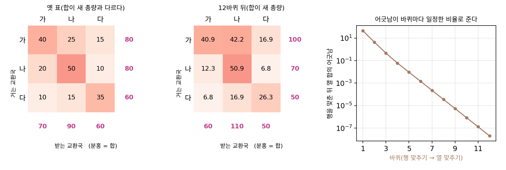
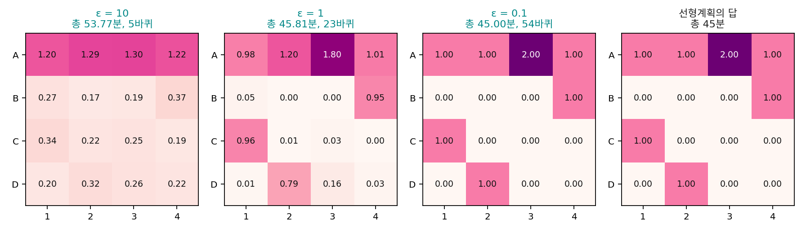
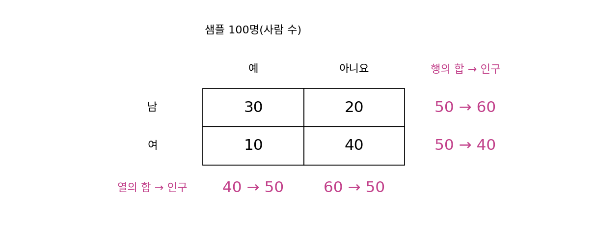
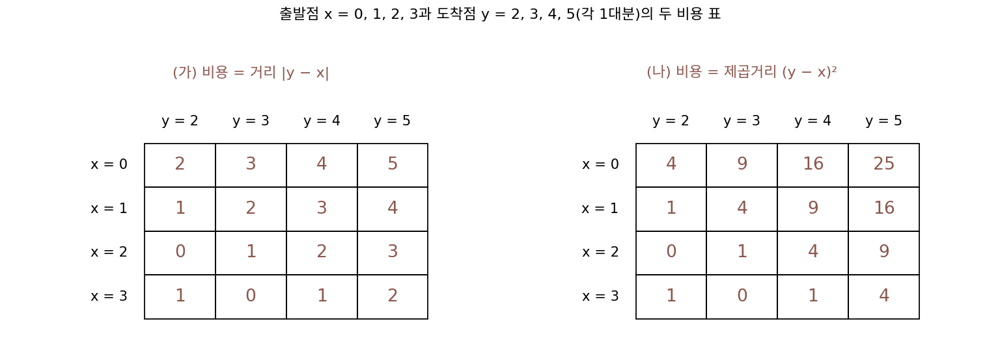
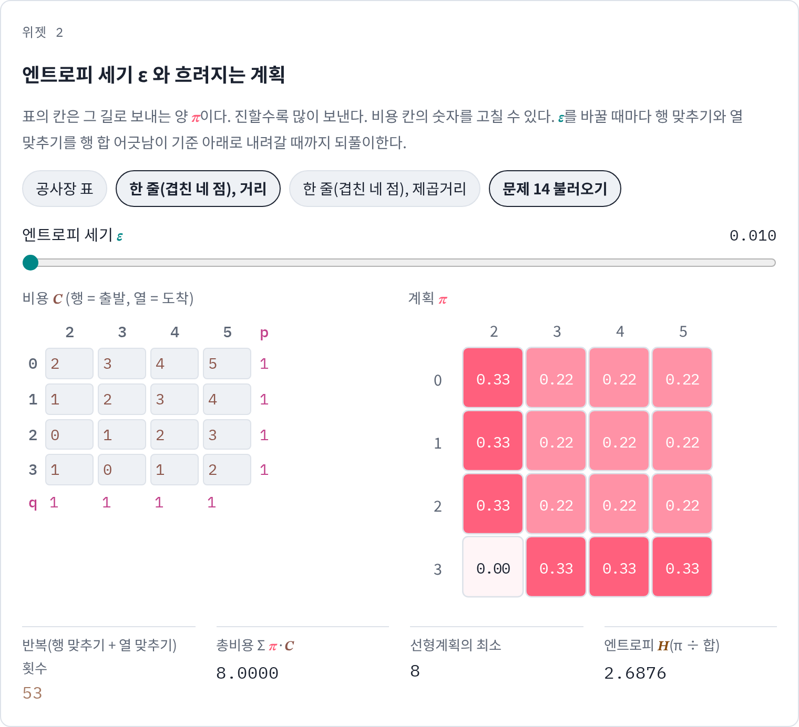
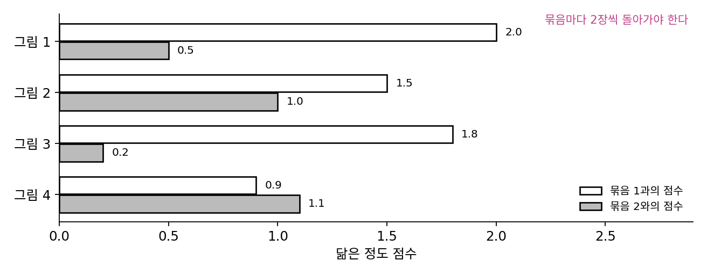

싱크혼 반복: 행과 열을 번갈아 맞춘다
칸토로비치 문제는 선형계획이라 언제든 풀 수 있지만, 표의 크기가 문제다. 미니배치 짝짓기에서 노이즈와 데이터가 256개씩이면 정할 칸이 65,536개이고, 학습 스텝마다 이 문제를 새로 풀어야 한다. 히스토그램의 칸이 몇백 개만 되어도 선형계획으로 푸는 것이 실용적이지 않다는 지적이 있다. 게다가 선형계획의 답은 비용이 조금만 바뀌어도 한 꼭짓점에서 다른 꼭짓점으로 뚝 건너뛴다. 조금 덜 정확해도 좋으니, 빠르고 매끄럽게 바뀌는 답을 얻을 길은 없을까?
역사: 전화 교환국과 인구 조사의 표 맞추기
뜻밖에도 그런 계산법은 수송 문제와 상관없는 곳에서 먼저 쓰였다. 1937년 네덜란드의 전화 공학자 크라위트호프(R. Kruithof)는 교환국 사이의 통화량 표를 새로 맞춰야 했다. 교환국마다 거는 통화와 받는 통화의 총량(행의 합과 열의 합)은 새로 정해졌는데, 칸마다의 통화량은 옛 표밖에 없었다. 그는 행마다 합이 맞도록 비율을 곱하고, 이어서 열마다 합이 맞도록 비율을 곱하기를 되풀이했다. 1940년 미국의 통계학자 에드워즈 데밍(W. Edwards Deming)과 프레더릭 스티븐(Frederick Stephan)은 인구 조사의 교차표를 샘플 조사와 맞추는 데 같은 방법을 썼다. 이 방법은 그 뒤로도 여러 번 다시 발견되었다.

방법이 언제 한 답으로 모이는지는 1964년 리처드 싱크혼(Richard Sinkhorn)이 『수리통계 연보』에 실은 짧은 논문 「임의의 양수 행렬과 이중 확률 행렬 사이의 관계」에서 밝혔다. 칸이 모두 양수인 정사각 행렬은 행마다, 열마다 알맞은 수를 곱해 행의 합과 열의 합이 모두 1인 행렬로 바꿀 수 있고, 곱하는 수들은 상수배를 빼고 하나로 정해진다는 것이다. 이 행렬 맞추기가 최적 수송과 만난 것은 2013년이다. 쿠투리(Marco Cuturi)는 NIPS(지금의 NeurIPS) 논문 「싱크혼 거리: 빛의 속도로 계산하는 최적 수송」에서 수송 문제에 엔트로피 페널티를 더하면 답이 싱크혼의 행렬 맞추기로 구해지고, 보통의 수송 풀이보다 몇 자릿수 빠르다는 것을 보였다.

행에 비율 곱하고 열에 비율 곱하는 거면 numpy 두 줄이에요. 이게 언제 한 답으로 모이는지 밝히는 데 1964년까지 걸렸어요?

크라위트호프는 돌려서 합이 맞는 표를 얻었으니 쓰는 데는 문제가 없었어요. 그런데 돌릴수록 정말 한 표로 다가가는지는 몰랐어요. 민준 학생이라면 그걸 어떻게 확인하겠어요?

그냥 천 바퀴 돌려서 어긋남이 0으로 가는지 보면… 아, 1937년이면 그 천 바퀴를 손으로 계산해야 하네요. 칸이 마흔 개면 한 바퀴에 곱셈만 80번이고요.

돌려서 모인다 해도 그 표 한 장에서만 아는 거잖아요. 칸에 0이 섞인 표에서도 모이는지, 모인 답이 하나뿐인지는 몇 번을 돌려 봐도 알 수 없고요.

그래서 싱크혼은 칸이 모두 양수인 정사각 행렬이면 언제나 된다는 것을 증명으로 밝혔어요. 그 뒤로도 49년 동안 이 표 맞추기는 전화와 통계 쪽의 도구였고, 수송 문제와는 이어지지 않았어요.

수송 문제는 비용을 가장 작게 하는 문제인데, 표 맞추기에는 비용이 어디에도 없으니까 둘이 같은 일이라는 게 안 보였겠네요.

그럼 비용 표를 어떻게 바꿔야 표 맞추기에 넣을 「옛 표」가 되는 거예요? 칸이 모두 양수여야 한다는 조건도 맞춰야 하고요.
엔트로피를 조금 섞은 계획
공사장 문제(흙더미 5, 1, 1, 1대분, 구덩이 2대분씩)로 돌아가자. 선형계획의 답은 일곱 칸에만 트럭을 보내고 나머지 아홉 칸은 0이었다. 이번에는 총 시간을 조금 손해 보더라도 트럭을 여러 길에 고르게 흩는 계획에 상을 준다. 흩어진 정도는 엔트로피 H로 잰다. 계획을 전체 양으로 나눠 확률표로 보면, 한 칸에 몰수록 H가 작고 고르게 퍼질수록 크다. 그리고 「총 시간 − ε × 엔트로피」를 가장 작게 하는 계획을 찾는데, ε가 클수록 고르게 흩는 계획을 더 쳐준다.
이렇게 바꾸면 답의 꼴이 정해진다. 미분해서 0으로 놓고 정리하면 가장 좋은 계획은 πᵢⱼ = uᵢ · e−Cᵢⱼ/ε · vⱼ 꼴이 된다. 길마다 e−Cᵢⱼ/ε라는 기본 비중이 있고, 흙더미마다 수 uᵢ를, 구덩이마다 수 vⱼ를 곱한 것이다. 남은 일은 행의 합이 p, 열의 합이 q가 되도록 u와 v를 고르는 것인데, 이것이 바로 크라위트호프와 데밍이 하던 표 맞추기다. ε = 1에서 따라가 보자. 기본 비중 표 K = e−C에서 출발해, 행마다 합이 (5, 1, 1, 1)이 되게 비율을 곱하면 열의 합이 (1.003, 4.469, 1.413, 1.114)로 어긋난다. 이제 열마다 합이 2가 되게 비율을 곱하면 행의 합이 (3.941, 1.793, 1.768, 0.498)로 다시 어긋난다. 그래도 행의 합과 목표 p의 차이는 바퀴마다 줄어서, 행의 합이 어긋난 크기의 총합은 3.12, 1.74, 0.77, 0.30, 0.11, …로 떨어지고 23바퀴 만에 10⁻⁸ 밑으로 내려간다.
| ε | 바퀴 수 | 총 시간 Σπ·C (분) | 엔트로피 H |
|---|---|---|---|
| 10 | 5 | 53.77 | 2.449 |
| 1 | 23 | 45.81 | 2.051 |
| 0.1 | 54 | 45.00 | 1.906 |
| 선형계획의 답 | (반복 없음) | 45 | 1.906 |
ε = 10이면 계획이 거의 고르게 흩어져 총 시간이 53.77분이다. 양만 맞추고 비용을 전혀 보지 않은 계획(모든 칸에 pᵢqⱼ/8)의 55.5분에 가깝다. ε를 1로 줄이면 45.81분으로 선형계획의 45분에 다가가고, 0.1에서는 계획이 선형계획의 답과 소수 넷째 자리까지 같아진다. ε는 정확함과 매끄러움 가운데 어느 쪽을 더 칠지 정하는 값이다.
이렇게 기본 비중 표 e−C/ε에서 출발해 행의 합을 맞추는 곱셈과 열의 합을 맞추는 곱셈을 번갈아 되풀이하는 방법을 싱크혼 반복 (행과 열 번갈아 맞추기 / Sinkhorn iteration)이라 한다.
행 맞추기 한 번은 그냥 비율을 곱하는 요령이 아니다. 지금의 표에 KL 발산으로 가장 가까우면서 행의 합이 p인 표를 고르는 일, 곧 「행의 합이 p인 표들」 위로의 KL 사영이다. 열 맞추기는 같은 KL 사영을 「열의 합이 q인 표들」 위로 한다. 행의 합이 p인 아무 표를 1만 개 만들어 지금 표와의 KL 발산을 비교해 보면, 비율을 곱해 맞춘 표보다 가까운 것은 하나도 없다. 싱크혼 반복은 두 조건 집합 위로 번갈아 사영하며 둘 다 만족하는 곳으로 다가가는 것이다. 곱셈과 나눗셈만 쓰므로 GPU에서 행렬 곱으로 한꺼번에 계산할 수 있다는 것도 큰 장점이다.

ML에서: 묶음을 고르게 나누는 SwAV
싱크혼 반복은 짝짓기 말고도 「고르게 나누기」가 필요한 곳에 들어간다. 2020년 마틸드 카롱(Mathilde Caron)과 동료들의 자기 지도 학습 방법 SwAV는 미니배치의 그림들을 학습 중인 묶음(프로토타입)들에 나눠 배정할 때, 모든 그림이 한 묶음으로 몰리는 뻔한 답을 막으려고 묶음마다 그림이 고르게 돌아가도록 조건을 건다. 그림이 행, 묶음이 열인 표에서 행의 합과 열의 합을 맞추는 문제이고, 논문은 이것을 싱크혼 반복으로 풀었다. 엔트로피 세기는 0.05, 반복은 3번이면 충분했다고 적었다.
문제 13. 설문 표를 인구 비율에 맞추기
100명을 조사한 샘플 표가 있다. 성별(행: 남, 여)과 응답(열: 예, 아니요)으로 나눈 사람 수가 [[30, 20], [10, 40]]이다. 실제 인구 비율로는 남 60, 여 40이고 예 50, 아니요 50이어야 한다. (가) 행마다 합이 (60, 40)이 되게 비율을 곱하고, 이어서 열마다 합이 (50, 50)이 되게 비율을 곱하라. 행의 합은 어떻게 되는가? (나) 이것을 되풀이하면 어디로 가는가? (다) 샘플 표의 교차비 (30 × 40)/(20 × 10)과 끝난 표의 교차비를 비교하라.

(가) 행을 맞추면 남자 줄은 60/50 = 1.2배라 36, 24, 여자 줄은 40/50 = 0.8배라 8, 32예요. 열을 맞추면 예 열이 50/44배라 40.91, 9.09, 아니요 열이 50/56배라 21.43, 28.57이고요. 다 맞췄네요.
행의 합을 다시 볼까요?
40.91 + 21.43 = 62.34, 9.09 + 28.57 = 37.66이에요. 열을 맞추다가 행이 다시 틀어졌어요. 그래도 처음보다는 덜 틀렸어요. 한 번 더 하면 60.39, 39.61, 그다음엔 60.06, 39.94…. 계속 줄어요.

끝까지 돌리면 [[40, 20], [10, 30]]이 돼. 행의 합 60, 40, 열의 합 50, 50이 다 맞고.
맞춘 표가 원래 샘플에서 무엇을 물려받았는지 보려면 (다)를 계산해 보세요.
샘플의 교차비가 1200/200 = 6이고, 끝난 표도 (40 × 30)/(20 × 10) = 6이에요. 행에 곱하고 열에 곱하는 것만으로는 교차비가 안 바뀌어요. 행의 합과 열의 합은 인구에 맞추고, 남녀 사이의 응답 경향은 샘플에서 가져온 거예요. 싱크혼 반복에서 uᵢKᵢⱼvⱼ의 K가 이 샘플 표 자리네요.

조별로 점수를 매겼는데 학과 평균과 반 평균을 둘 다 맞추라고 해서, 학과별로 조정하고 반별로 조정하기를 몇 번 오갔던 조교님이 이걸 하신 거였구나.
문제 14. ε 를 0에 가깝게 줄이면
한 줄 위의 출발점 {0, 1, 2, 3}과 도착점 {2, 3, 4, 5}(각 1대분)에서 싱크혼 반복을 돌린다. (가) 비용이 거리일 때 ε = 0.01까지 줄이면 계획은 어떻게 되는가? 짝짓기 하나(순열)가 되는가? (나) 비용이 제곱거리일 때는? 행의 합과 목표 p의 차이 10⁻⁶을 기준으로 ε = 1, 0.1, 0.01에서 바퀴 수는 어떻게 바뀌는가? (다) e−C/ε를 그대로 계산하면 ε = 0.01에서 무슨 일이 생기는가? (풀어 본 뒤 위젯 2의 「문제 14 불러오기」로 확인해 보자.)

ε를 0으로 보내면 엔트로피 페널티가 사라지니까 선형계획의 답, 곧 짝짓기 하나가 나오겠죠. 공사장 표에서도 0.1이면 선형계획과 같아졌잖아요.
거리 비용으로 돌려 보면요?

ε = 0.01에서 계획이 행마다 (1/3, 2/9, 2/9, 2/9), 마지막 행만 (0, 1/3, 1/3, 1/3)이에요. 칸마다 흩어져 있어요. 비용은 8로 최소인데 짝짓기 하나가 아니에요.
잠깐, 이 겹친 네 점에서는 거리 합이 8인 짝짓기가 18개였잖아(출발점 3만 도착점 2로 가지 않으면 다 8). 이 계획이 그것들을 섞은 거 아닐까?
확인해 볼 방법이 있을까요?
18개를 똑같은 비율로 섞은 표를 만들어 볼게요. … 지금 계획이랑 칸마다 똑같아요. 엔트로피도 2.6876으로 같고요. 짝짓기 하나의 엔트로피는 1.3863이니까 훨씬 커요.
비용이 똑같이 최소인 계획이 여럿이면, ε가 아무리 작아도 엔트로피 페널티가 그 가운데 하나를 고르는 데 쓰이겠지요. 무엇을 고를까요?

비용이 같으면 남는 기준은 엔트로피뿐이니까, 최소 비용 계획들 가운데 엔트로피가 가장 큰 것을 고를 것 같아요.
비용 8인 계획 가운데 엔트로피가 가장 큰 걸 따로 풀어 볼게. … 이 표가 나와.
그럼 ε → 0의 극한이 선형계획의 「한」 답이 아니라 최소 비용 답들 중 가장 퍼진 거네. W₁이 최적 짝짓기를 하나로 못 정하는 게 싱크혼에서는 흐린 계획으로 드러나는 거야.
(나) 제곱거리는 ε = 0.01에서 순서대로 짝짓기(0→2, 1→3, 2→4, 3→5) 하나로 가요. 그런데 바퀴 수가 ε = 1에서 48바퀴, 0.1에서 114,203바퀴, 0.01에서는 20만 바퀴를 돌려도 기준에 못 닿았어요. ε를 열 배 줄였더니 2천 배 넘게 느려졌어요.

(다)는요? 비용이 9인 칸을 생각해 보세요.

e−9/0.01 = e−900인데 float64로 계산하면 0이 나와요. e−9/0.1만 해도 8.2 × 10⁻⁴⁰이고요.
칸이 0이 되면 행 합으로 나눌 때 0으로 나누게 되겠네.
그래서 실제 코드는 로그를 씌운 채로 계산하는구나. 제 코드도 로그로 바꿔서 다시 돌렸어요. ε를 너무 작게 잡으면 느리고 위험하고, 너무 크게 잡으면 흐려지니까 적당한 값을 골라야 하네요. 시험 범위를 너무 좁게 잡으면 공부는 정확한데 끝이 안 나고, 너무 넓게 잡으면 빨리 끝나는데 흐릿하게만 아는 것처럼요.
위젯 2에서 문제 14 설정을 불러와, 거리 표와 제곱거리 표에서 ε를 줄여 가며 계획이 어떻게 달라지는지 확인해 보세요.

문제 15. 그림 넷을 묶음 둘로 고르게
미니배치의 그림 넷이 묶음 둘과 얼마나 닮았는지 점수를 매겼다. 그림 1: (2.0, 0.5), 그림 2: (1.5, 1.0), 그림 3: (1.8, 0.2), 그림 4: (0.9, 1.1). (가) 그림마다 점수가 큰 묶음을 고르면 묶음별 그림 수는? 그림마다 소프트맥스를 취하면 묶음별 확률의 합은? (나) 비용을 −점수로 두고, 행의 합 1(그림마다 하나씩), 열의 합 2(묶음마다 두 장씩)로 싱크혼 반복을 ε = 1에서 3번만 돌리면 열의 합과 행의 합은? (다) ε = 0.2로 줄이면 어느 그림이 어느 묶음으로 가는가?

(가)는 묶음 1이 그림 1, 2, 3, 묶음 2가 그림 4만 가져요. 3 대 1이요. 소프트맥스 합은 2.722 대 1.278이고요. 그림 2의 점수가 1.5 대 1.0이라 묶음 1이 큰 게 맞는데 뭐가 문제죠?
학습이 이렇게 몇 스텝 이어지면 묶음 1은 점점 무엇을 닮아 갈까요?
그림이 많이 배정된 묶음일수록 그 그림들 쪽으로 학습되니까, 묶음 1이 모든 그림을 다 닮게 되고 결국 모든 그림이 묶음 1로 가겠네요. 묶음이 여럿인 의미가 없어져요. SwAV 논문이 막으려던 「뻔한 답」이 이거였구나.
(나)는 3번만 돌렸는데 열의 합이 정확히 (2, 2)고, 행의 합은 0.998, 1.001, 0.998, 1.003이야. 마지막이 열 맞추기라 열은 딱 맞고 행이 조금 어긋나. 계획은 그림 1: (0.654, 0.344), 그림 2: (0.412, 0.589), 그림 3: (0.676, 0.322), 그림 4: (0.258, 0.744)이고.
그림 2를 보세요. 점수로는 묶음 1이 큰데 계획은 묶음 2 쪽이 더 크죠?
묶음 1을 원하는 그림이 셋이라 자리가 모자라요. 그럼 누가 양보할지는… 그림 셋 가운데 묶음 1과 묶음 2의 점수 차가 가장 작은 게 그림 2(0.5 차이)라서 그림 2가 양보하는 거예요.
택시 배차에서 가장 가까운 택시를 다른 손님에게 양보해야 전체 대기 시간이 줄던 거랑 같네.
(다)는요?
ε = 0.2로 줄이면 그림 1과 3이 묶음 1로(0.94, 0.962), 그림 2와 4가 묶음 2로(0.905, 0.997) 거의 딱 나뉘어요.
SwAV가 ε를 0.05로 작게 둔 게 이 때문이겠네요. ε가 크면 모든 그림이 두 묶음에 반반씩 흐려지고, 작으면 거의 딱 나뉘면서도 묶음마다 같은 수가 돌아가요. 동아리 신입생을 팀에 나눌 때 모두 인기 팀만 쓰면 팀당 정원을 정해 두고 덜 아쉬운 사람부터 다른 팀으로 보내는 거랑 같아요.